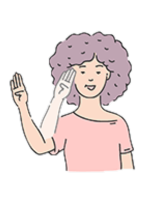

Personal Projects
ASL and Gesture Recognition




- In this project, we used hand coordinates to recognise American Sign Language (ASL) using open-source libraries:
- Opening of laptop camera using OpenCV API.
- Capturing of hand coordinate (refer to image above) using Mediapipe API.
- We also utilised the TI RTOS CC2650 SensorTag to capture hand gait movements. The sensors used are:
- Accelerometer.
- Gyroscope.
- The data captured are fed into a machine learning model for classification. The trained models are situated on a cloud server and data are transmitted over MQTT.
- A pre-recorded demonstration of me performing the various hand signs can be seen in this video below:
- Please find repository to the application hereLearn more.